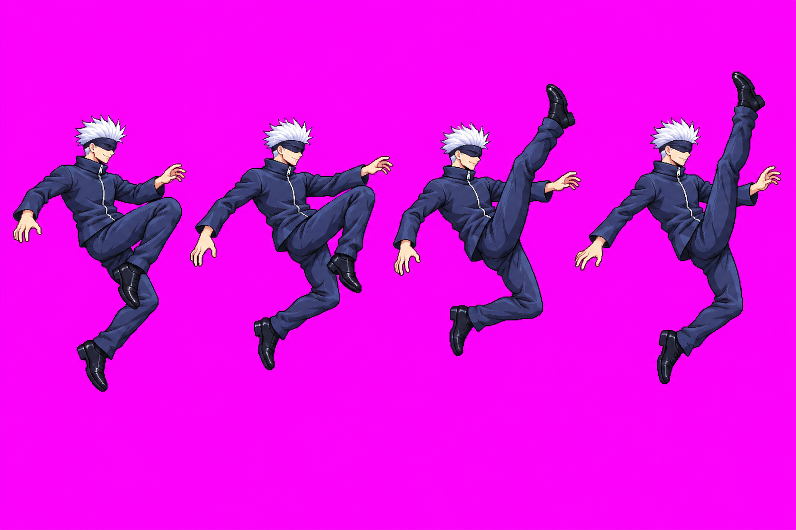
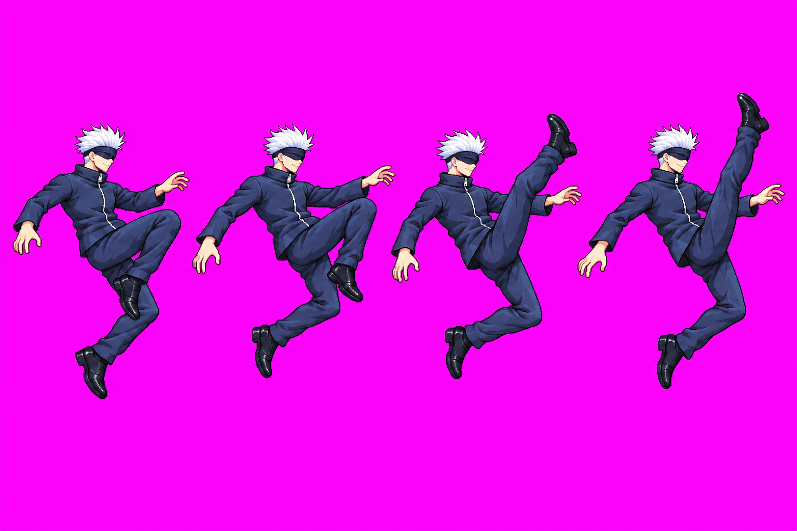

Gojo directional normals — ENG-112
The user approved all nine drawings as drawn via Claude relay combat #30. Every frame crop and loop below comes from the current 48-color packed atlas, beside the matching gameplay stand-in and approved idle f0. Drawing approval is separate from technical clearance. The game continues to use stand-ins until Claude resolves the technical holds and integrates the art.
Current technical state: the full atlas packs 53 animations / 245 frames and the candidate scale gate passes after measured auto-head fits on fSmash and fair, but the pack report and Astra audit retain technical holds for clipped or margin-touching poses, stitch/pose overlap, scale/body-volume concerns and contact issues. uair has no usable strip; it remains on its stand-in. See the audit, provenance, scale sheets and raw sources linked below.
Packed Gojo atlas · Packed animation map · Head scale sheet · Body-volume sheet · Cast lineup · Active hit-box overlay sheet · Generation and stitch provenance · Astra audit


The red outlines show the current packed hit boxes on every active frame. They are a static art-side contact check; Claude still owns runtime dummy/contact verification.
uair — held, no candidate
HOLD — stand-in remains. Two preserved Part A attempts place the kicking foot above Gojo’s hair-top ceiling. The combined-strip rescue result was not captured with a trustworthy file path, and no output was saved or used; the provenance ledger records that the one-round call cap was exceeded by an accidental no-op call. No complete six-pose strip exists to approve.


To replace the stand-in, a new user decision is needed for a fresh bounded generation round.